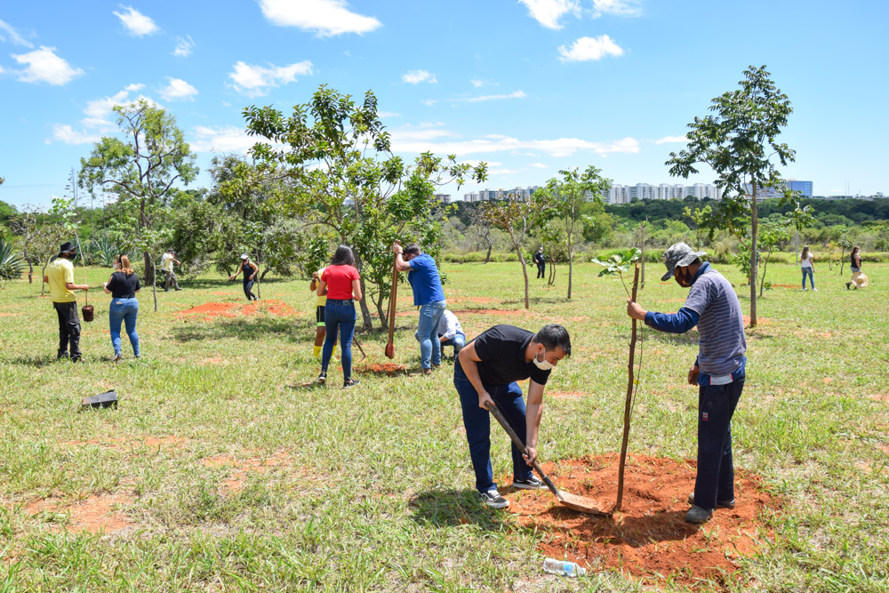
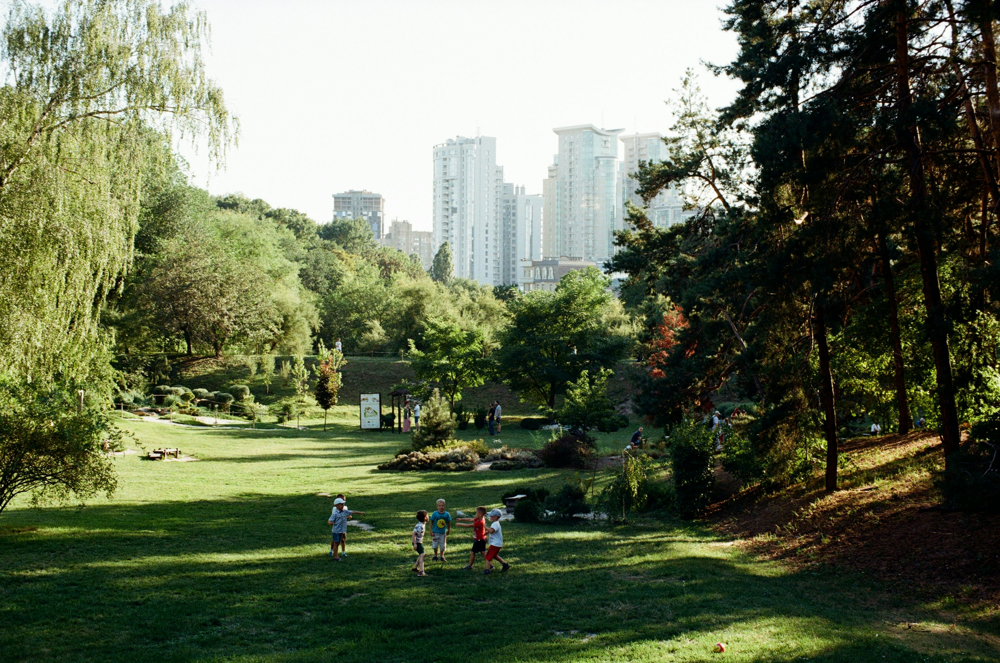

Projetos de Reflorestamento
Conheça algumas das nossas iniciativas que estão transformando o meio ambiente.

Projeto Raízes do Futuro
Iniciativa voltada ao reflorestamento de áreas degradadas em regiões do interior paulista, com foco em árvores nativas da Mata Atlântica.

Floresta Urbana
Transformando espaços urbanos em ambientes verdes e sustentáveis, com o apoio de voluntários e empresas parceiras.

Verde no Sertão
Projeto de reflorestamento e recuperação do solo em regiões semiáridas, promovendo sustentabilidade e renda local.